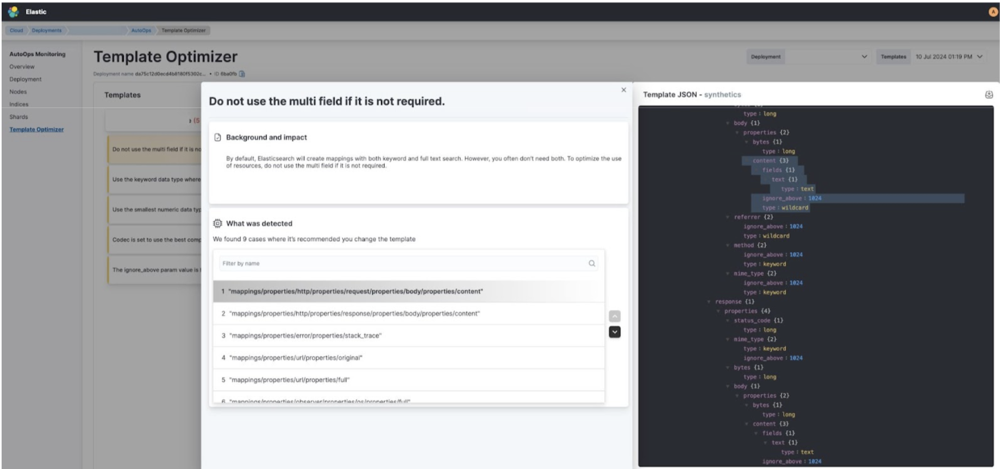

Template Optimizer
editThe Template Optimizer View offers detailed recommendations for optimizing search performance according to Elastic best practices, indicating where the change can be applied. AutoOps analyzes non-system templates daily, pinpointing the exact changes needed for improvement.

When AutoOps identifies a recommended change, it logs the template separately, allowing you to track past impactful changes. You can navigate between different deployments to view all template recommendations.